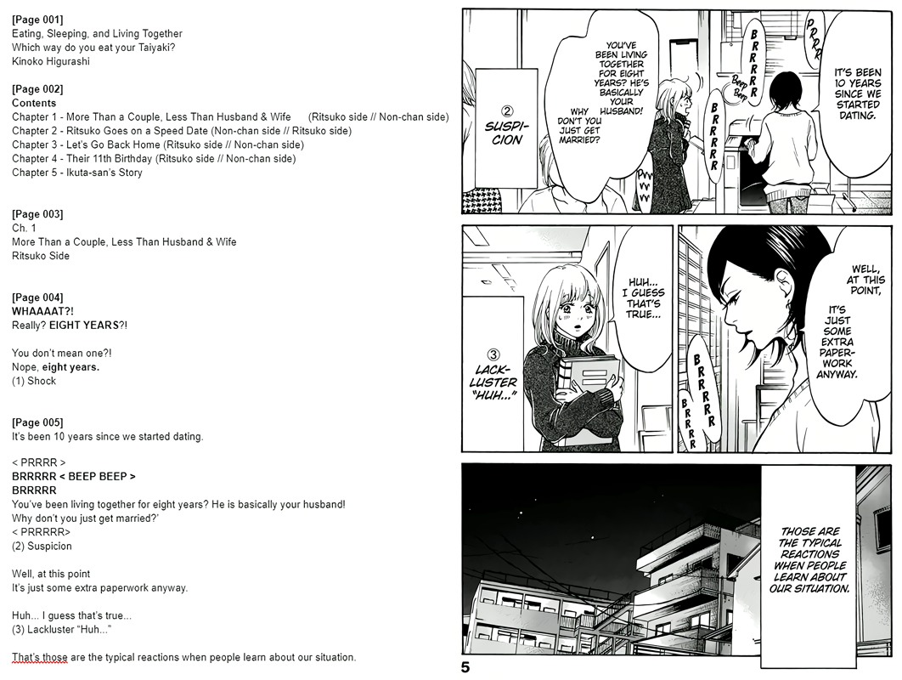

Um capítulo bônus/extra que não afeta a história principal. Em geral, apresenta obras de arte, histórico dos personagens, notas do mangaká ou uma história extra.
Na imagem SFX, você pode ver as linhas paralelas no topo. Elas são símbolos; funcionam como sfx. Esses símbolos podem ser usados com ou sem sfx. Eles podem ter vários significados, dependendo do contexto. Como na próxima imagem, significa choque.
Life With an Ordinary Guy Who Reincarnated Into a Total Fantasy Knockout ep. 5
O Cleaner pega o arquivo bruto, corrige quaisquer falhas (como artefatos devido à digitalização, mudanças de cor, inclinações etc.) e limpa todo o texto original, inclusive SFX, se necessário. Mas, atualmente, isso pode ser apenas a remoção de textos, já que o formato digital bruto está amplamente disponível.
#Redrawer (RD)
O Redrawer redesenha todas as partes apagadas pelo limpador e as torna tão suaves quanto possível. Ele corrige tudo o que foi afetado devido à digitalização ou a outros problemas. Atualmente, a limpeza e o redesenho costumam ser feitos por uma única pessoa, pois essas duas tarefas estão intimamente relacionadas.
CL & RD by Raj (Manga: The Fragrant Flower Blooms With Dignity)

TL script of Living, Eating, and Sleeping Together ch. 1 (Page 1-5) (Helvetica Scans)
#Typesetter (TS)
O Typesetter pega o script traduzido do tradutor e o compõe no painel com a fonte, a formatação e o desenho sfx apropriados. Às vezes, o TS pode fazer tanto a tradução quanto a composição tipográfica.
#Proof reader (PR)
O Proof Reader revisa todos os textos traduzidos para corrigir erros de digitação, traduções incorretas ou problemas gramaticais. É essencial que o PR seja fluente no idioma da tradução. O trabalho dele pode se tornar desnecessário se o TL for altamente experiente, pois o QC pode assumir as responsabilidades.